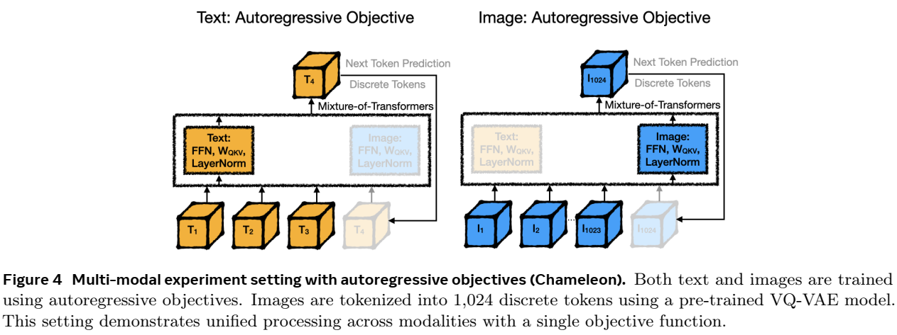
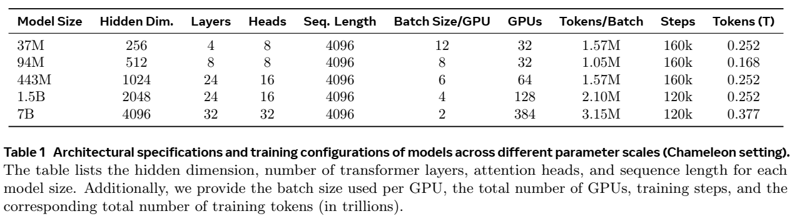

论文阅读十三：混合Transformer：一种用于多模态基础模型的稀疏可扩展架构
摘要
大型语言模型（LLMs）的发展已经扩张到多模态系统，能够在一个统一的框架内处理文本、图像和语言。相比训练仅文本的LLMs，训练这些模型需要非常大的数据集和计算资源。为克服这种扩张挑战，我们引入混合Transformer(MoT)，一种稀疏多模态transformer架构，显著减少预训练计算成本。MoT通过模态解耦模型的非嵌入参数——包括前馈网络、注意力矩阵和层归一化——在整个输入序列上实现了具有全局注意力的特定模态处理。我们在多种设置和模型尺度上评估MoT。在Chameleon 7B设置上（自回归文本图像生成），MoT仅使用55.8%的FLOPs来匹配密集基准的性能。当扩展到包含语言，MoT仅使用37.2%的FLOPs达到可比拟密集基准的语音性能。在Transfusion设置中，其中文本和图像使用不同目标训练，7B MoT使用三分之一的FLOPs匹配密集基准的图像模态性能，760M MoT模型在关键图像生成指标上优于1.4B密集基准。系统分析进一步突显了MoT的实际优势，在47.2%的挂钟时间内实现了密集的基准图像质量，在75.6%的挂钟时实现了文本质量（在使用NVIDIA A100 GPU的AWS p4de.24xlarge实例上测量）。论文地址
混合transformer（MoT）架构。MoT是一种生成模型架构，旨在处理任意交织的模态序列（如文本、图像和语音）。每种模态都采用一组单独的非嵌入transformer参数，包括前馈网络、注意力矩阵和层归一化。在训练过程中，可以使用特定模态的损失来监督每种模态。
引言
基础模型的发展已经扩张到多模态大型语言模型（LLMs），能够处理多种数据类型，如文本、图像和语音——在一个统一的框架内。最近的进展，如Chameleon（Chameleon Team，2024）,证明早期融合（early-fusion）、混合模态模型在一个架构内生成多种媒体类型的潜力。这些模型有望推进内容创建和跨模态翻译等应用，但由于跨多种模态同时学习表示的复杂性，它们带来了巨大的计算挑战。
早期融合多模态LLMs的训练需要大量数据集和计算资源，相较于单模态模型。例如，Chameleon（Chameleon Team，2024）在9.2T训练标记（包括图像标记）上训练来匹配LLaMA2（Touvron等，2023b），后者在2T个训练标记上进行文本性能训练。每种模态引入不同的优化挑战，必须在统一的模型内同时解决。经验上，在密集transformer模型中（图15），这些模态通常表现出冲突的训练动态性，使优化复杂化并增加计算负荷。尽管将输入作为没有特定模态先验的统一标记进行处理，但不同的模态在特征空间中占据了不同的区域（图2，附录图23），这表明了模态处理方式的固有差异。
为了解决这种扩展挑战，一个有可能的方式是模态稀疏化，如混合专家（MoE, Mixture of Experts），它通过为每个输入仅激活模型组件的一个子集来实现扩张，降低了整体计算负荷。在MoE中，每个transformer层中的学习路由稀疏地激活多个MLPs中的一个，允许不同的专家侧重数据的不同方面（Jacobs等人，1991年；Eigen等人，2013年；Shazeer等人，2017年；Lepikhin等人，2020年；Fedus等人，2022年；Jiang等人，2024年；Sukhbaatar等人，2024年）。然而，MoE引入一些挑战：学习路由常常导致不平衡的专家利用率，在训练中需要额外的负载平衡技术。而且，MoE的双层优化特性复杂化了训练动态性，随着模型尺寸扩大变得不稳定。解决MoE中的这些挑战仍然是一个开放研究领域。
在多模态场景中，先前的工作（Bao等人，2022b；Wang等人，2022；Shen等人，2023；Lin等人，2024）已经在transformers的MoE层引入模态感知的稀疏化，或者在后训练期间微调LLM骨干中的特定模态模块（Wang等人，2023；He等人，2024）。这些方法显示出有希望的结果，表明基于模态的简单规则路由优于MoE中常用的学习路由。这一成功可能归因于更稳定的训练动态，避免了专家和路由在早期训练不足时出现的不稳定。
受这些见解的启发，我们提出了混合Transformer（MoT），一种稀疏的多模态transformer架构，它为所有非嵌入transformer参数引入模态感知稀疏化（图2a）。不同于先前的方法，MoT在整个transformer上应用模态感知稀疏化，而不是特定层或模块。MoT接收一个交互多模态序列（如，文本、图像、语言）作为输入，动态地应用不同的、特定模态的参数到每个标记，包括前馈网络、注意力投影矩阵和层归一化。因此，MoT的设计及产生一个和他的密集transformer具有完全一样计算结构和FLOP数量的稀疏模型。
我们通过在各种多模态设置中从头开始预训练13个实例（包括3个7B模型）来评估MoT。这种全面的设置使我们能够评估MoT在多种实验配置中的性能，每种配置都逐步引入了更复杂的训练目标和模式。具体而言，我们在以下多模式场景中进行了实验，以评估MoT的适应性和效率增益：
- 1、文本和图像的自回归目标（Chameleon）。在Chameleon设置中，我们的7B MoT仅使用55.8%的FLOPS匹配7B密集基准，在多个数据上评估（图5）。结果在多个其他模型尺度上是一致的（37M、94M、433M、1.5B）（图6，附录图24）。
- 2、引入语音作为第三种模态（Chameleon: Text+Image+Speech）。 当在Chameleon设置中，扩展到包括离散语音标记作为第三种模态时，MoT在所有模态中获得类似性能，对于语音模态使用更少（37.2%）的训练FLOPs（图8）。结果在多个其他模型尺度上也是一致的（图8，附录图25）。
- 3、文本的自回归目标和图像的基于扩散的目标（Transfusion）。在Transfusion设置中，文本和图像使用不同目标进行训练——文本自回归，图像基于扩散——我们额760M MoT模型，利用1.4B密集基准（Transfusion）一般的训练、推理FLOPs，在多种指标上优于密集模型，包括用于图像生成的CLIP分数和FID分数，用于图像字幕的CIDEr分数，和图像模态训练损失（图11）。7B MoT模型使用少于三分之一的FLOPs在图像生成的扩散验证损失和图像字幕的CIDEr分数上匹配密集基准的图像性能（图10）。此外，在Transfusion设置中的三种不同模型尺度（163M、760M、1.4B）中，MoT在图像模态上一致获得显著加速，远超密集模型（图12）。
为了提供更深和更全面的MoT评估，我们使用额外的实验扩展我们的分析，来验证MoT在多个维度的优势。这些实验评估了MoT的计算效率、挂钟时间的减少以及相对于其他稀疏架构的有效性：
- 4、 挂钟时间比较 此外，系统分析（在配备NVIDIA A100 Tensor Core GPU的AWS p4de.24xlarge实例上）表明，MoT的效率转化为挂钟训练时间的显著减少。我们的7B MoT仅在47.2%的时间内与7B密集模型的图像性能相匹配，在75.6%的时间里与文本性能相匹配（图19）。
- 5、 将MoT与混合专家进行比较 为了验证MoT的观测增益不仅仅是由于额外的稀疏参数（尽管这些额外的稀疏参量不会增加训练/推理FLOP），我们在整个实验中引入了4专家混合专家模型（MoE-4x）作为额外的基线。MoE-4x在所有实验设置中都包含比MoT更多的稀疏参数，与MoT相比，其表现一直不佳，尤其是在非文本模态（图像、语音）方面。当以挂钟时间测量时，MoT比MoE-4x的优势更大（图19）。
- 6、 结合两全其美——混合异构Transformers 作为早期的概念验证，我们探索了一种将稀疏transformer集成到MoT框架中的混合方法。具体来说，我们对MoT的文本transformer采用MoE-4x架构，同时对图像任务保留原始的MoT架构。初步结果证实，这种组合可以进一步提高Chameleon和Transfusion设置中的文本模态性能，而不会影响图像生成质量（图16、图17）。
方法：混合Transformer架构
背景：多模态生成的基础模型
大型语言模型的最新进展已经扩展到文本之外的模式。一种关键方法将图像和语音等非文本数据标记为离散的标记序列，并将自回归序列建模应用于类似于基于文本的模型的数据（图2a）。例如，Chameleon（Chameleon Team，2024）使用预训练的图像标记器（Gafni等人，2022）将图像标记为1024个离散标记，从而允许跨文本和图像进行统一训练。类似的方法也被应用于语音（Nguyen等人，2024）。Transfusion（Zhou等人，2024）等替代方法使用连续图像标记和基于扩散的训练目标来改进图像等连续模态的生成（第3.4节）。
为了探索多模态基础模型的内部表示，我们分析了它们的特征空间。结果显示，跨层按模态（文本、语音、图像）进行聚类（图2b，附录图23）。主成分分析（PCA）显示了特征空间中不同模态的不同区域，尽管输入被统一处理为离散标记，没有模态特定的先验。这种自然的聚类表明了模态处理的固有差异，为我们的后续方法提供了信息。
多模态基础模型架构和特征空间分析。a，典型的多模态基础模型处理交互的文本（T）和图像（I）标记（如，Chameleon）。图像标记生成自预训练的VQGAN模型，将图像转为1024个离散标记。b，Chameleon+Speech 7B密集模型1，5，17和32层的潜在特征空间主成分分析。尽管模型的架构处理所有输入作为没有特定模态先验的统一形式的离散标记，特征空间中可以观察到按模态分为不同的聚类。这种自然的聚类突出了模态见固有的差异，表明模型可能以不同方式处理它们。生成使用：https://github.com/Weixin-Liang/Modality-Gap (Liang等人，2022)。
MoT架构：特定模态参数解耦
我们推出MoT，一个新颖的架构，旨在加速多模态预训练，同时减少计算成本。MoT扩展标准transformer，通过结合所有非嵌入层的特定模态的权重，包括前馈网络、注意力矩阵和层归一化。这种方式允许模型更加有效地处理不同模态，同时保持学习跨模态交互的能力。令 为输入标记序列，其中每个 属于一种模态 。一个典型的transformer可以表示为：
在我们提出的MoT中，我们按模态解耦参数，同时保留全局注意力：
全局注意力机制操作跨所有模态，捕捉跨模态关系，尽管特定模态参数解耦：
这里， ， ， 和 时特定模态投影矩阵， 和 是特定模态层归一化。
这种方式允许MoT适应每种模态的特定特征的处理，同时维持一个统一的架构进行多模态学习。MoT中的计算过程起始于按模态分组输入标记（算法1，3-5行）。特定模态投影然后应用于注意力（第6行），跟着是跨模态的全局自注意力（8-9行）。随后，特定模态输出投影（11行），应用层归一化和前馈网络（12-13行）。该过程结束于输出的组合，包括残差连接和层归一化（14-16行）。
实验
结果概述
我们在三种多模态实验设置上评估MoT架构，每种渐进地结合更复杂的训练目标和模态。对于每种设置，我们比较MoT和两个基准：密集transformer和具有4个专拣的混合专家（MoE）模型（MoE-4x）。所有的模型实现，构建在密集模型之上，在训练和测试阶段维持相等的FLOPs，从而可以直接比较效率和性能。
1、 具有自回归目标的多模态实验设置（Chameleon，图4）。两种模态都使用自回归目标进行训练。图像通过预训练的VQ-VAE(Cafni等，2022)表示为1024个离散标记。我们将MoT的表现与两种模态的训练和评估指标的基线进行了比较。

2、 扩展了语音模态的多模态实验（变色龙：文本+图像+语音，图7）。 通过结合语音作为第三种模态，扩展了之前的设置，由预训练语音分词器生成的离散标记表示。所有模态都是用自回归目标训练。这种设置评估MoT处理额外模态的能力，同时维持效率和性能。
3、 具有特定模态目标的多模态实验（Transfusion，图10） 探索文本使用自回归目标和图像使用基于扩散的目标的多目标训练。该实验强调了MoT管理不同模态的不同训练目标的能力，在保持文本生成能力的同时，有可能提高图像生成质。
接下来的章节展示每种设置的详细结果：Chameleon（章节3.2），Chameleon+Speech（章节3.3），和Transfusion（章节3.4）。每个章节提供MoT和基准跨各种多模态生成评估指标的综合比较。在章节3.5中，我们报告了消融研究，展示当引入特定模态解耦到transformer不同组件时，对模型性能的影响。
Chameleon设置中的表现：文本和图像生成的自回归目标
在本小节中，我们评估了Chameleon设置中的混合transformer（MoT）架构，其中使用自回归目标训练文本和图像模态。
实验设置
数据和预处理。 我们使用Chameleon Team（2024）中同样的混合模态训练数据和同样的文本和预训练图像分词器。训练数据包括大致相同的文本和图像标记。我们使用Obelisc（Laurençon等人，2023）、MS-COCO（Lin等人，2014）、Flickr30k（Plummer等人，2015）和Shutterstock2数据集上的保留集上的验证损失来评估7B模型的性能。更具体地说，对于MS-COCO和Flickr30k，我们采用MS-COCO的Karpathy测试分割（Lin等人，2014）和Flickr30k的Karpathe测试分割（Plummer等人，2015），并使用这两个数据集报告文本到图像和图像到文本的条件困惑。
模型超参数。 我们评估了从37M到7B参数的多个模型尺度上的MoT，并将其与密集transformer和MoE-4x基线进行了比较。所有模型都是用受控的FLOP从头开始进行预训练的，以便进行公平比较。表1详细列出了每个模型比例的架构规范和训练配置。模型架构逐步扩展，隐藏维度从256增加到4096，层数从4增加到32。注意点从8到32，而序列长度在所有尺度上保持不变，为4096个标记。随着模型大小的增加，我们将每个GPU的批处理大小从12个减少到2个，同时将GPU的数量从32个增加到384个。较小型号（3700万至443万）的训练步骤为160000，较大型号（880M至7B）的训练步数为120000。训练标记的总量在0.168万亿到0.377万亿之间，大多数配置处理的标记约为0.252万亿。这使我们能够在广泛的模型尺度和训练FLOP上检查MoT的性能，从而深入了解其在不同计算尺度下的有效性。

混合专家实现。对于我们的MoE-4x基线，我们采用了专家选择（EC）（Zhou等人，2022）路由，这是一种最先进的路由方法，通过让每个专家根据路由权重选择前k个输入，确保训练期间的负载平衡。然而，EC不能直接应用于自回归生成，因为它违反了序列中标记之间的因果依赖关系，其中每个标记仅基于前一个标记生成。之前的工作提出了各种推理时间调整，以确保用EC路由训练的MoE模型的生成因果关系。例如，最近的一些工作探索了在推理过程中使用开箱即用的专家选择路由器作为标记选择路由器（Zhong等人，2024），或在路由训练后训练小型辅助MLP预测器（Raposo等人，2024.；Lin等人，2024:）。
我们使用与训练期间相同的EC路由来评估所有模型，只关注验证困惑。这种方法保证了isoFLOP推理设置作为密集基线。然而，它也引入了两个混淆因素。首先，它可能高估了MoE-4x的验证性能，因为路由器可以访问未来的标记，这可能会导致信息泄露。其次，当评估数据分布与训练数据存在显著差异时，它也可能低估了MoE-4x的验证性能，导致专家之间的标记分布不均。我们承认这些局限性，并在每个单独的实验中对与MoE-4x相比的结果进行了额外的讨论，以提供更全面的理解。
加速7B尺度预训练
MoT 中的模态分离：留一法分析
实验设置
融合两种世界的精华——混合异构Transformers
在Chameleon设置中结合MoT和MoE-4x
在Transfusion设置中结合MoT和MoE-4x
MoT的ML系统方面
本节重点介绍了MoT的一些系统属性，并演示了它们如何在典型的训练环境中转化为现实世界的好处。
吞吐量扩展属性
实证分析
相关工作
多模态生成的基础模型
LLMs的最新进展已经扩展到多模态应用。早期的多模态LLMs侧重于理解而不是生成，使用后融合技术来合并分别编码的图像和文本（Alayrac等人，2022年；Liu等人，2023年；Laurençon等人，2023；Chen等人，2022）。虽然有助于轻量训练，这些模型缺少多模态生成能力。
为了实现多模态生成，一个关键策略设计标记非文本模态到离散序列（Aghajanyan等人，2022；Yu等人，2023；Bao等人，2021；Ramesh等人，2021，Liu等人，2024c）（图2a）。例如，Chameleon（Chameleon Team, 2024）和相关方法（Aghajanyan等人，2022）标记图像到1024个离散标记，使用预训练模型，如VQGAN（Esser等，2021），在组合的文本图像标记序列上训练。类似的标记法已经应用到语音（Nguyen等，2024）。最近的模型，如Transfusion（Zhou等，2024）已经探索连续图像标记和基于扩散损失函数来增强视觉生成质量。我们提出的MoT方法于这些方法兼容，并且可以作为密集transformer架构的直接替代进行集成。我们在各种多模态设置中展示了大量改进，包括Chameleon和Transfusion。
多模态生成的稀疏架构
稀疏架构，特别是混合专家（MoE），已经在基于文本的模型中显示出了希望，允许每个输入动态参数选择（Jacobs等人，1991年；Eigen等人，2013年；Shazeer等人，2017年；Lepikhin等人，2020年；Fedus等人，2022年；Jiang等人，2024年；Sukhbaatar等人，2024年）。最近的努力使MoE适应了多模态任务，解决了模态之间固有特征空间差距带来的挑战（Wang等人，2022；Shen等人，2023；Bao等人，2022a；Long等人，2023，Lin等人，2024）。这些方法表明，特定于模态的参数分配可以通过解决不同的数据类型（即模态）特征来提高性能（Liang等人，2022）。与之前的工作不同，本文提出了transformer混合（MoT）框架，该框架通过解耦transformer架构中的所有非嵌入参数来推广MoE概念。当总参数的数量得到控制时（图16），MoT在多模态预训练中的表现始终优于MoE，并与MoE-4x表现出互补性（图17）。
虽然最近的研究将MoE从前馈层扩展到注意力机制（Wang等人，2023；Shen等人，2024；Liu等人，2024b），但我们的方法在几个关键方面有所不同。与仅限于生成文本输出的CogVLM（Wang等人，2023）不同，MoT能够生成图像和文本。在我们工作的同时，Playground v3（PGv3）（Liu等人，2024b）使用全局自关注将DiT风格的图像transformer与Llama3-8B集成为文本骨干，并在文本和图像生成方面实现了最先进的性能。在训练过程中，文本LLM被冻结，只有图像transformer组件被更新。虽然CogVLM和PGv3都在预训练的LLM之上进行多模态训练，但我们将MoT建立为一种可以从头开始训练的通用稀疏架构。MoT还将transformer层上的每个非嵌入参数解耦，包括层归一化，而之前的方法保持共享的层规范参数。我们的研究结果将MoT定位为多模态预训练的灵活和可扩展的解决方案，展示了其补充基于MoE的架构的潜力，并为计算效率更高的大规模多模态模型提供了途径。
结论
在这项工作中，我们提出了混合Transformer（MoT），这是一种稀疏且可扩展的架构，旨在解决多模态模型预训练的计算挑战。通过按模态解耦非嵌入参数并在多模态序列中保持全局自我关注，MoT在保持跨模态交互的同时优化了模态特定的处理。我们的实验表明，MoT在各种设置和模型规模下显著降低了训练成本。在Chameleon和Chameleon+Speech设置中，MoT在使用大幅减少FLOP时达到或超过了密集基线的性能。此外，MoT在更复杂的环境（Transfusion）中保持了这些改进，在这种环境中，不同的训练目标被应用于不同的模式，在图像生成等任务中表现出一致的效率提升和增强的性能。除了FLOP的减少，系统分析还强调了MoT的实际好处，包括减少文本和图像任务的挂钟时间。当跨GPU扩展时，MoT展示了进一步的改进，表明其适用于大规模分布式训练环境。将MoT与混合专家（MoE-4x）相结合的初步结果表明，混合模型有潜力在不增加计算成本的情况下进一步提高性能。这些发现表明，MoT可以作为未来多模式LLM的有效框架，实现更高效的大规模培训，同时保持不同模式的竞争力。